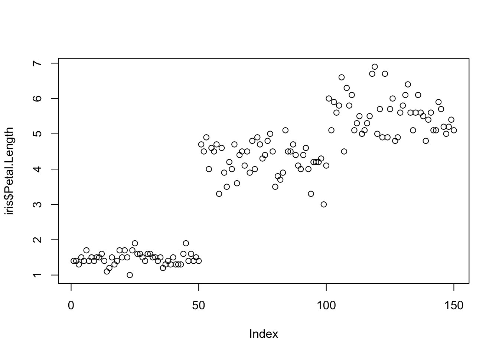

3 Functions, Best-coding Practices, and Debugging Intro
Now that we have introduced Rstudio, markdown, R basics, and Tidy data, it is our goal this week to improve our programming skills such that as we go forward you will be able to practice your problem solving efficiently by staying organized, avoiding common errors, and effectively debugging errors when they occur.
This week our goals are to be able to:
- Understand the value of abstraction and “reusability” provided by functional programming
- Create basic functions
- Use Packages to access functions from the R community
- Organize code into logical blocks and use comments to help understand code
- Use RStudio’s formatting tools to avoid common errors
- Identify common errors and strategies for fixing/debugging them
Reading:
- Skim https://r4ds.hadley.nz/program
- Skim https://rstudio-education.github.io/hopr/basics.html#functions down through 2.7 Summary
- Skim https://rstudio-education.github.io/hopr/packages.html
- Skim https://r4ds.hadley.nz/workflow-style
- Skim one of
Ooof, videos on these topics were pretty rough. Let me know if you find any that you liked!
3.1 Functions
Functions in programming are just like functions in math. In R they are even written just like they are in math
\(f(x)\) in math is the same as F(x) in R
Structured/Modular/Functional programming: a general programming concept where developers separate program functions into independent, modular, organized pieces, primarily functions.
3.1.1 Functions… why and how
Write functions to encapsulate sections of code
Allows you to avoid global variables that can be accessed and changed anywhere (functions only know about arguments you specifically pass to them)
To avoid duplicating code: if you have multiple copies of almost identical code, put it into a function
Create a function when R does not have a built-in function for your needs
When running an analysis over and over again, can just call the function (one line) instead of running many lines of code
3.1.2 A simple function: CV()
There is no R function for CV, or coefficient of variation (standard deviation divided by mean)
Our CV function takes a single argument xvec which has no default
value. (We could set a default value of 1 for example by using
xvec = 1 inside the function(...) function).
It calculates the standard deviation divided by the mean and returns the result.
The return(CV.value) indicates what is returned by the function. If
there is no return function the result of the last line is returned.
3.1.3 Now we need to apply our function.
# pick 1000 random values from a normal distribution with mean 5 and sd 2
values <- rnorm(n=1000, mean=5, sd=2)
# now lets test our function
CV(values)## [1] 0.40135373.1.4 What objects are available?
Check out the environment now.

Only the new function
CVand the objectvaluesare available in the Global Environment (they are global objects)Object
CV.value(defined inside the function) is encapsulated within the functionCVand not available outside it
3.1.5 Optional arguments
Some functions have optional arguments. Optional arguments often have a default value, that is a value that is used if one isn’t provided by the user.
For example, our CV function doesn’t work if xvec includes missing
values.
## [1] NAWe could add an optional argument to allow it to remove NA values, as
sd and mean both have na.rm optional arguments. When set to
na.rm = TRUE, NA values are removed before the respective
calculation.
CVnew <- function(xvec, na.rm=F) {
CV.value <- sd(xvec, na.rm=na.rm)/mean(xvec, na.rm=na.rm)
return(CV.value)
}
## this code could be tidied up, with Reformat Code
## try highlighting the code and using Code>Reformat Code in the menu bar
# Test out the new function
CVnew(values)## [1] NA## [1] 0.40154113.2 Packages
- Packages, as we have discussed, are collections of functions, code, and data collected and curated by the R community.
- Packages are available through 3 primary sources
- CRAN https://cran.r-project.org/ see “Packages” on the left
- Bioconductor https://www.bioconductor.org/
- GitHub
- CRAN and Bioconductor packages have undergone some peer review
- GitHub packages may or may not have been reviewed
3.2.1 Installing and using packages
- To install CRAN packages you can
- use the
install.packagesfunction with the argument being a character string of the package name - use the Packages pane (which runs
install.packagesfor you)
- use the
- Bioconductor and Github packages are a bit more tricky requiring
packages to install their packages
- Bioconductor install instructions https://www.bioconductor.org/install/
- To install Github packages you can use the remotes package https://cran.r-project.org/web/packages/remotes/index.html
3.2.2 Installing and using packages
Clicking on the link to a package in the package pane takes you to the documentation of the package
- Documentation for most all CRAN and Bioconductor include
- description files
- help pages for their functions
- examples for their functions
- Many also have “vignettes” which are worked examples of how to use the package
- You can find all of this in the Help pane for that package.
3.3 Best coding practices
3.3.1 Reproducibility
I (almost) never save my R workspace
It contains global variables that could mess up your future code
I regularly clear the workspace or run rm(list=ls())
Much better practice to rerun the entire script in an empty workspace
Exception
- Results from analyses that take hours or days to run
3.3.2 Style guides
Big companies have strict guidelines on how to organize your code, e.g. Google Style Guide
http://adv-r.had.co.nz/Style.html (Hadley Wickham’s guide)
Indent your code inside a function, inside an if-statement, inside a for-loop, and if a statement goes over two lines
Use meaningful object names
Too long and you will get tired of typing
Too short and you won’t know what the object contains
Objects in R are global and available everywhere (more on this later)
3.3.3 Automated code styling/formatting
Fortunately people have also written code to properly style your code according to common guidelines.
In R-studio you can go to “Code” in the menu bar and “Reformat Code”.
There is also a package called “styler” described a bit in https://r4ds.hadley.nz/workflow-style
3.4 Debugging
The origin of debugging comes from literally removing a moth that shorted out one of the early computers at NASA. Admiral Grace Hopper said in a famous report they were “debugging” the computer and the term has stuck for all computers and code.
3.4.1 Verifying code
Test your code, test your code, test your code!
Write the smallest possible amount of code (a portion of one line if possible)
Then try simple examples you know the answer to (zero, negative number, positive number)
Show the results: is this what you expected?
Pay special attention if you are copying sections of code and changing a variable name (common to forget to change all occurrences)
3.4.2 Commenting your code
R ignores everything on a line that follows a
#Comment at the top of your script/markdown
- What the code does, your name, email, date started
Comment before each function or section of code
- What is the purpose of that section of code, what does it do
Comment throughout
Whenever an unusual function is used
Whenever the code is hard to understand
Whenever an algorithm is particularly useful
3.4.3 “Commenting out” code
Instead of deleting code you might not need, or
When you make modifications to your code, or
During debugging
Copy the code that works then comment it out by prefixing it with
#Change the new copy of the code
If you need to revert to the old code, just remove the # before each line (“uncomment”)
- Delete the old commented out code only once you have thoroughly tested the new code
ctrl+shift+C is a shortcut in Rstudio to comment/uncomment large blocks of code

3.4.4 Common errors and How to Fix Them
Semantic errors = mistyping errors
- Missing parentheses/brackets
- Missing quotes
- Misplaced commas
- Misspelled object names
- R is case-sensitive
Resolving semantic errors
Semantic errors generally have useful error messages, except missing parentheses brackets
Always make sure there is a
>in the console! A+means the last line wasn’t completed.- Use ESC to get from
+back to>
- Use ESC to get from
3.4.4.1 Missing Parentheses or Brackets
If you forget a closing parenthesis ), bracket ], or curly brace
}, R will show a continuation prompt in the console (+), meaning
it’s waiting for you to finish the expression.
Example (Missing Parenthesis)
## Error in parse(text = input): <text>:2:0: unexpected end of input
## 1: mean(c(1, 2, 3) # Missing closing parenthesis
## ^Error Message: None, but look in the console
+ # Cursor is stuck at the continuation prompt
Fix:
Press ESC to return to the > prompt, then add the missing ).
## [1] 23.4.4.1.1 Missing or Mismatched Quotes
If you forget to close a string with a quotation mark (" or '), R
doesn’t know where the string ends.
Example (Missing Quote)
## Error in parse(text = input): <text>:1:6: unexpected INCOMPLETE_STRING
## 1: x <- "Hello # Missing closing quote
## ^Error Message: None, but again look in the console
+ # Cursor is stuck at the continuation prompt
Fix:
Press ESC to return to the > prompt, then add the missing ).
3.4.4.2 Unexpected Symbols (e.g., Typos, Missing Commas)
If you forget a comma between function arguments or mistype a variable name, R will return an “unexpected symbol” error.
Example (Missing Comma)
## Error in parse(text = input): <text>:1:10: unexpected numeric constant
## 1: x <- c(1 3
## ^Error Message: Error: unexpected numeric constant in "x <- c(1 3"
Fix:
Add the missing comma.
3.4.4.3 Object Not Found (Using Undefined Variables and Functions)
If you try to use a variable or function that hasn’t been defined, R will return an object not found error.
Example (Misspelled Function)
## Error in meann(c(1, 2, 3)): could not find function "meann"Error Message:
Error in meann(c(1, 2, 3)) : could not find function "meann"
Fix:
Check for typos and use tab-completion.
## [1] 2Example (Undefined Variable)
Error Message:
Error: object 'x' not found
Fix:
Make sure x exists before using it.
3.4.4.4 Type Mismatches (Coercion Issues)
R automatically converts mixed types in vectors. If you try to perform numeric operations on character strings, you’ll get an error or warning.
Example (Mixing Numbers and Text)
## Warning: NAs introduced by coercion## [1] 1 3 NAWarning message:
Warning: NAs introduced by coercion
Fix:
Ensure all elements are numeric or remove text values.
## [1] 1 3 5If you must handle mixed data, filter out text:
## Warning: NAs introduced by coercion3.4.5 Warning or Error?
- Warnings are OK, just meant to inform you about something you might not intend to do.
## Warning: NAs introduced by coercion## [1] 1 3 7 NA- Errors mean the code didn’t run properly
## Error in parse(text = input): <text>:1:10: unexpected numeric constant
## 1: x <- c(1 3
## ^3.4.6 Debugging is scientific
- Hypothesis: If I execute this line of code, then variable
Awill change from value x to value y - Method: create an observation to report the value of
A, then run the line of code - Results: is
A == y? - Discussion: If
A == y, then we move to our next investigation.A != ythen you have found the bug (or your hypothesis is wrong)